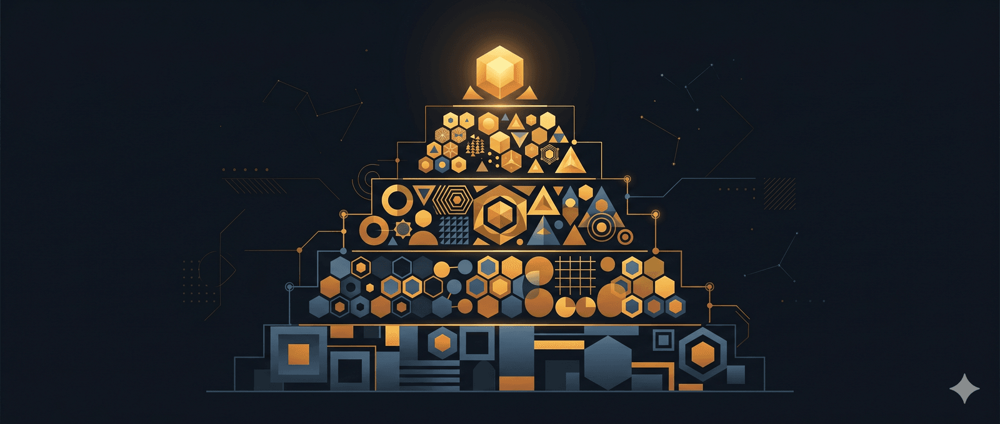

BẢN ĐỒ 5 TẦNG - TOÀN BỘ TÍNH NĂNG CLAUDE 2026, XÂY TỪ MÓNG LÊN
Claude tung hơn 20 tính năng trong 2026. Chỉ riêng quý 1 đã có 35 bản cập nhật trong 90 ngày.
Projects, Artifacts, Web Search, Deep Research, Claude Code, Skills, MCP, Hooks, Plugins, Memory, Styles, Cowork, Voice Mode, Computer Use, Agent Teams - và còn nhiều nữa.
Nhưng vấn đề không phải Claude có bao nhiêu tính năng. Vấn đề là đa số mọi người đang học ngẫu nhiên - không biết bắt đầu từ đâu, không biết cái nào ghép với cái nào.
Mình đưa mọi người 5 tầng xây hệ thống với Claude, từ móng lên mái. Bạn biết mình đang ở tầng nào, bạn biết cần học gì tiếp theo 👇
Tầng 1: Xây nền tảng ngữ cảnh cho Claude
 TẦNG 1 - NỀN TẢNG: DẠY CLAUDE HIỂU BẠN LÀ AI
TẦNG 1 - NỀN TẢNG: DẠY CLAUDE HIỂU BẠN LÀ AI
Setup một lần. Mọi cuộc chat sau đều khác.
Projects (Dự án) - thiết lập ngữ cảnh cố định cho Claude. Upload tài liệu, style guide, thông tin công ty vào một chỗ. Claude không còn hỏi “bạn làm gì?” mỗi lần bắt đầu chat mới.
Memory (Bộ nhớ) - Claude tự nhớ sở thích của bạn qua các phiên chat. Gói miễn phí cũng có. Còn sớm, đôi khi quên những thứ hiển nhiên - nhưng khi hoạt động tốt thì bạn không cần lặp lại chính mình nữa.
Styles (Phong cách viết) - lưu giọng văn tùy chỉnh. “Blog kỹ thuật” hay “email thân mật” - chọn một lần, dùng xuyên suốt.
→ Chưa tạo một Project nào? Bạn đang giải thích lại chính mình mỗi cuộc hội thoại.
Tầng 2: Kết nối Claude thành hệ thống
⚡ TẦNG 2 - KẾT NỐI: BIẾN CLAUDE THÀNH HỆ THỐNG
Đây là tầng tạo ra khoảng cách lớn nhất giữa “dùng Claude” và “xây hệ thống Claude”.
MCP (Model Context Protocol - giao thức kết nối Claude với công cụ bên ngoài) - kết nối Claude với Google Drive, Slack, GitHub, Notion, database, và hàng trăm tool khác. Không có MCP, Claude là chatbot. Có MCP, Claude là cả một hệ thống workflow.
Skills & Slash Commands (Kỹ năng & Lệnh tắt) - viết một lệnh, dùng mãi mãi. /review, /test, /commit - thay vì gõ 50 từ mỗi lần. Phiên bản mới (Skills 2.0) không chỉ là prompt lưu sẵn nữa - mà là cả một workflow package gồm chỉ dẫn, script, template, tài liệu tham chiếu gói gọn trong một chỗ.
Plugins - gói kỹ năng cài một click từ marketplace. Từ plugin chính thức của Anthropic đến hàng nghìn gói từ cộng đồng - thiết kế giao diện, review code, quản lý dự án. Marketplace đang mở rộng rất nhanh. Chọn 3-5 cái phù hợp với workflow của bạn, bỏ qua phần còn lại.
Hooks (Hành động tự động theo sự kiện) - tự động format code mỗi lần chỉnh sửa, lint trước khi commit, thông báo khi hoàn thành. Không phải “gợi ý” - Hooks chạy 100% mọi lần khi sự kiện xảy ra.
→ Không có Tầng 2, bạn đang copy-paste qua lại giữa các tab. Có Tầng 2, Claude tự kết nối mọi thứ lại với nhau.
Tầng 3: Để Claude tự làm việc
 TẦNG 3 - THỰC THI: CLAUDE LÀM VIỆC THAY BẠN
TẦNG 3 - THỰC THI: CLAUDE LÀM VIỆC THAY BẠN
Không chỉ trả lời câu hỏi. Claude LÀM.
Claude Code - đọc toàn bộ codebase, viết code, chạy lệnh terminal, commit git. Không phải chatbot hỗ trợ code. Đây là một coding agent . Hiện đứng #1 thế giới trên SWE-bench Verified - benchmark chuẩn đo năng lực code thực tế.
Cowork - Claude Code nhưng dành cho người không biết code. Ứng dụng desktop, quản lý file, điều khiển trình duyệt, tự động hóa mọi thứ trên máy tính. Theo Anthropic, phần lớn người dùng Cowork không phải developer - họ là dân marketing, tài chính, pháp lý, vận hành. Đây là tính năng mà mình tin sẽ thay đổi cách rất nhiều người Việt làm việc.
Agent Teams (Đội agent) - nhiều Claude chạy song song. Mỗi agent trong môi trường riêng, làm nhiệm vụ riêng, cùng lúc. Mạnh, nhưng phù hợp nhất khi tác vụ đủ lớn để cần chia nhỏ.
Deep Research (Nghiên cứu chuyên sâu) - chạy trong vài phút, kéo hàng chục nguồn, trả về bản brief nghiên cứu đầy đủ. Thứ mà trước đây mất cả tiếng đồng hồ Google, giờ chỉ cần một prompt.
→ Tầng này là nơi Claude chuyển từ “công cụ trả lời” sang “đồng nghiệp làm việc”.
Tầng 4: Nâng cấp chất lượng output
 TẦNG 4 - TRỢ LỰC: NÂNG CẤP CHẤT LƯỢNG OUTPUT
TẦNG 4 - TRỢ LỰC: NÂNG CẤP CHẤT LƯỢNG OUTPUT
Những tính năng này không tạo workflow mới - nhưng làm mọi thứ ở 3 tầng trên tốt hơn hẳn.
Extended Thinking (Tư duy mở rộng) - Claude suy luận từng bước trước khi trả lời. Với bài toán khó - code phức tạp, phân tích dữ liệu, toán học - chất lượng nhảy vọt rõ rệt.
Artifacts (Sản phẩm trực tiếp) - Claude tạo file ngay trong chat. Trang HTML, biểu đồ, SVG, React component, tài liệu. Kết quả render trực tiếp, không cần copy ra ngoài.
Web Search - tìm kiếm internet, trích dẫn nguồn. Không sâu bằng Deep Research nhưng nhanh hơn nhiều. Phù hợp khi cần kiểm tra nhanh hoặc cập nhật tin mới nhất.
1M Context Window (Cửa sổ ngữ cảnh 1 triệu token) - khoảng 750.000 từ trong một cuộc hội thoại. Đa số không bao giờ chạm 200K. Nhưng khi cần đưa nguyên cả codebase hay hợp đồng dài vào cùng lúc - không gì khác làm được điều này.
Tầng 5: Tính năng phụ trợ, dùng khi cần
📦 TẦNG 5 - PHỤ TRỢ: BIẾT ĐỂ BIẾT, DÙNG KHI CẦN
Không phải không tốt. Chỉ là chưa cần thiết cho đa số mọi người ở thời điểm hiện tại.
Voice Mode - nói chuyện với Claude bằng giọng nói, hỗ trợ nhiều ngôn ngữ. Hay, nhưng gõ phím vẫn nhanh hơn cho đa số tác vụ.
Claude Apps - xây app nhỏ chạy bằng Claude. Hạn chế hơn Projects. Đa số tạo một cái rồi không mở lại.
Computer Use (Điều khiển máy tính) - Claude nhìn màn hình và click chuột giúp bạn. Ý tưởng rất hay. Thực tế thì còn chậm và hay lỗi với tác vụ phức tạp.
Batch API (API xử lý hàng loạt) - hàng nghìn request cùng lúc, giảm 50% chi phí. Dành cho developer đang xây sản phẩm trên nền Claude.
Prompt Caching (Lưu cache prompt) - tiết kiệm đến 90% chi phí cho context lặp lại. Chỉ dùng qua API.
Remote Control (Điều khiển từ xa) - điều khiển Claude Code từ điện thoại.
Model Switching Mid-Chat (Chuyển model giữa cuộc chat) - chuyển qua lại giữa Haiku, Sonnet, Opus trong cùng một chat.
Sharing Conversations (Chia sẻ hội thoại) - chia sẻ cuộc chat Claude qua link. Muốn share output thì copy ra nhanh hơn.
Claude for Slack (phiên bản cũ) - tích hợp Slack cơ bản trước khi có MCP. Chậm, ngữ cảnh hạn chế. MCP đã thay thế phần lớn chức năng của nó.
Nên bắt đầu từ tầng nào
VẬY BẮT ĐẦU TỪ ĐÂU?
Nếu bạn chưa dùng gì → bắt đầu từ Tầng 1. Tạo một Project, cho Claude hiểu bạn là ai.
Nếu bạn đã có Project → lên Tầng 2. Cài MCP, tạo Skills riêng. Đây là lúc Claude chuyển từ chatbot sang hệ thống.
Nếu bạn code → Claude Code. Nếu không code → Cowork. Cả hai đều ở Tầng 3 - nơi Claude bắt đầu làm việc thay bạn.
Đừng cố học hết 20+ tính năng cùng lúc. Xây từ móng lên. Mỗi tầng vững, tầng tiếp theo mới phát huy được sức mạnh.
🔍 Phân tích bài viết
📌 Tóm tắt ý chính
Bài viết đưa ra framework 5 tầng để tiếp cận Claude theo thứ tự ưu tiên: Nền Tảng (setup context cố định) → Kết Nối (MCP, Skills tự động hóa) → Thực Thi (Claude làm việc tự lập) → Trợ Lực (tăng chất lượng output) → Phụ Trợ (tính năng bổ sung). Điểm cốt lõi: không phải học 20+ tính năng cùng lúc, mà xây từ móng lên, mỗi tầng vững chắc rồi mới lên tầng tiếp theo. Đây là taxonomy học tập thực tế, không phải danh sách tính năng.
🗺️ Mindmap
Xem file canvas: TOÀN BỘ TÍNH NĂNG CLAUDE 2026.canvas
Cấu trúc phân cấp:
- Root: 5 Tầng Xây Hệ Thống Claude
- Tầng 1 (Projects, Memory, Styles) → đầu vào: ngữ cảnh cố định
- Tầng 2 (MCP, Skills, Plugins, Hooks) → quá trình: tự động hóa workflow
- Tầng 3 (Claude Code, Cowork, Agent Teams, Deep Research) → đầu ra: Claude làm việc
- Tầng 4 (Extended Thinking, Artifacts, Web Search, 1M Context) → chất lượng
- Tầng 5 (Voice, Apps, Computer Use, Batch API, etc.) → tùy chọn
💡 Insight & Góc nhìn đa chiều
1. Framework này giải quyết paralysis qua tiên độ hóa:
- Vấn đề thực tế: người dùng Claude bị overwhelm bởi 20+ tính năng, không biết bắt đầu từ đâu.
- Giải pháp: không phải “học tất cả”, mà xây tầng lầu với thứ tự logic. Tầng 1 không phải optional — mọi người cần Projects/Memory.
2. Sự chênh lệch giữa Tầng 2 và Tầng 3 là bản lề lớn nhất:
- Tầng 1-2 = “Claude hiểu tôi” + “Claude kết nối hệ thống” → bạn vẫn phải prompt mỗi lần.
- Tầng 3 = “Claude làm việc không cần tôi prompt” → chuyển từ chatbot thành colleague.
- Bài viết gọi Tầng 2 là “tạo ra khoảng cách lớn nhất” — điều này chính xác. Nếu không cài MCP/Skills, bạn đang copy-paste giữa các tab.
3. Phân chia dân số người dùng hiệu quả:
- Tầng 3 split: “Nếu bạn code → Claude Code. Nếu không code → Cowork.”
- Đây là strategic bifurcation — Anthropic nhận ra rằng coding và automation là hai workflow khác nhau hoàn toàn. Cowork được định vị là “desktop automation cho non-developers” — điều này có sức mạnh rất lớn ở Việt Nam (marketing, finance, operations, HR).
4. Tầng 5 là “sugarcoat” cho tính năng chưa sẵn sàng:
- Computer Use, Voice Mode, Claude Apps được xếp ở Tầng 5 vì chúng còn unreliable hoặc niche.
- Bài viết thẳng thắn: “Computer Use — ý tưởng rất hay. Thực tế thì còn chậm và hay lỗi.”
- Điều này cho thấy pragmatism: không oversell, chỉ recommend khi stable.
⚖️ Phản biện
1. Framework 5 tầng nguy hiểm quá đơn giản hóa:
- Nhiều user có thể jump Tầng 1 vì họ đã có context khác (Notion, Confluence, internal docs). Bài viết giả sử mọi người bắt đầu từ zero.
- Tầng 2 và 3 có overlap: Bạn có thể dùng Claude Code (Tầng 3) mà không cần MCP/Skills (Tầng 2). Sơ đồ này gợi ý tuần tự, nhưng thực tế có thể song song.
- Tầng 4 không phải “trợ lực” mà là prerequisites có điều kiện: Extended Thinking chỉ tốt nếu bạn cần reasoning sâu; 1M Context chỉ dùng nếu có large corpus. Xếp ở Tầng 4 có vẻ như tất cả đều nên enable.
2. Thiếu cost/benefit matrix:
- MCP setup (Tầng 2) có friction — mình phải cài MCP server, config URL, debug connection.
- Bài viết không nói: “Mình nên cài MCP nào trước? Cái nào ROI cao nhất?”
- Cowork được hứa là “sẽ thay đổi cách làm việc của người Việt” — nhưng chưa có dữ liệu adoption hay use case cụ thể.
3. “Mỗi tầng vững, tầng tiếp theo mới phát huy” là lý tưởng nhưng không thực tế:
- Nhiều công ty tech đã skip Tầng 1 vì họ có Projects tương tự (Cursor IDE, GitHub Copilot context).
- Một developer chỉ cần Claude Code (Tầng 3) ngay tức khắc. Chờ setup Memory/Styles (Tầng 1) là “waste”.
❓ Câu hỏi mở
-
Tầng 2 (MCP/Skills) có bao nhiêu người dùng Claude sẽ thực sự setup? Friction rất cao (cần terminal, config file). Có số liệu adoption không?
-
Tầng 3 split (Claude Code vs Cowork) — cái nào tăng trưởng nhanh hơn? Cowork dự báo sẽ “thay đổi cách người Việt làm việc”, nhưng chưa có case study cụ thể. Lợi nhuận ngành nào (HR, Marketing, Finance) chuyển đến Cowork đầu tiên?
-
Extended Thinking và 1M Context có real-world ROI không? Bài viết xếp ở Tầng 4 (support), nhưng chúng có giảm chi phí hay chỉ tăng flexibility mà không save token?
🇻🇳 Liên hệ Việt Nam
1. Cowork = “Black Swan” event cho ngành non-tech:
- Việt Nam có hàng triệu user trong HR, Finance, Marketing, Administration — họ không code, nhưng cần automation desktop.
- Hiện tại họ dùng RPA (UiPath, Blue Prism) hoặc VBA Excel — rất đắt, rất chậm.
- Cowork (desktop automation bằng voice + visual) có thể democratize automation ở Việt Nam. Ví dụ:
- HR: “Claude, extract salary data từ all email, make pivot table”
- Finance: “Tính lại forecast, update 5 sheets tương tự”
- Marketing: “Screenshot tất cả landing page competitors, make comparison table”
2. MCP setup thách thức ở Việt Nam:
- Tầng 2 yêu cầu terminal, APIs, config files — điều khó với bộ phận non-technical.
- Tuy nhiên, Slack + Notion + Google Drive có MCP support → user Việt sẽ bắt đầu từ đấy (kết nối với tools quen thuộc), không phải từ command line.
3. Claude Code (Tầng 3) đánh bại Cursor, GitHub Copilot tại Việt Nam:
- Benchmark #1 thế giới (SWE-bench Verified) = rất important signal cho startup/agency Việt Nam đang làm outsource dev.
- Nếu dùng Claude Code thay Cursor/Copilot, cost thấp hơn, chất lượng cao hơn → sẽ lượt xét lại outsource economics.
4. Deep Research (Tầng 3) có tác động vĩ mô:
- Content creator, journalist, researcher Việt hiện phải dành 1-2 tiếng để research 1 bài viết (Google → Wikipedia → blog → cross-check).
- Deep Research kéo hàng chục nguồn, merge insights → 4x nhanh hơn. Điều này thay đổi productivity ngành media/education.
📖 Giải thích thuật ngữ
-
MCP (Model Context Protocol): Giao thức chuẩn để Claude kết nối với external tools (Google Drive, Slack, GitHub, database). Thay vì Claude chỉ “trả lời”, nó có thể “đọc file”, “tạo task”, “query database” qua MCP.
-
Skills / Slash Commands: Prompt lưu sẵn + workflow package. Ví dụ:
/review <file>= Claude tự động đọc file, analysis code, suggest improvements. Thay vì gõ 50 từ mỗi lần. -
Plugins: Tương tự Skills nhưng install từ marketplace (cách cài ứng dụng trên điện thoại). Marketplace của Anthropic đang mở — có plugin thiết kế UI, code review, project management từ community.
-
Hooks: Automation rules — “chạy action này sau khi format code”, “lint trước commit”, “notify khi task hoàn thành”. LUÔN chạy 100%, không phải gợi ý.
-
Extended Thinking: Claude “think aloud” trước trả lời. Với bài toán khó (math, code logic, analysis phức tạp), nó suy luận từng bước → kết quả chất lượng cao hơn.
-
Artifacts: Không phải chat message, mà file/component render trực tiếp. Tạo React component, HTML page, SVG diagram → xem ngay trong Claude, không copy ra ngoài.
-
Deep Research: Chạy tự động lên internet, kéo nhiều sources, cross-reference, viết report. Khác Web Search (search 1 query) — Deep Research = “research project” hoàn chỉnh.
-
Batch API: API gọi hàng ngàn request lại, giảm 50% chi phí. Dành cho developer xây product trên Claude (chứ không phải dùng chat).
-
Prompt Caching: Lưu cache phần context lặp lại (ví dụ: codebase 100MB). Lần gọi tiếp theo không cần gửi lại → tiết kiệm 90% chi phí (chỉ trả phí lần đầu).